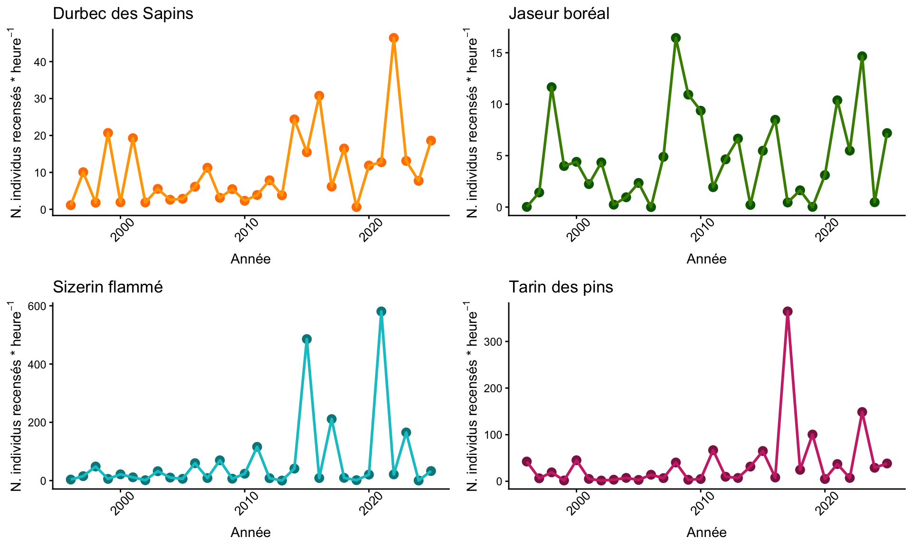
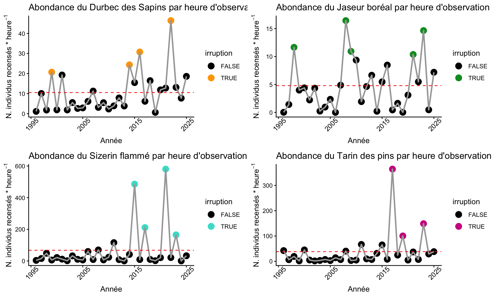

library(readxl)
library(dplyr)
abond <- read_excel("/Users/maxencepoirier-joanette/Rstudio/FOR7046/Abondance.xlsx")
bague <- read_excel("/Users/maxencepoirier-joanette/Rstudio/FOR7046/Baguage.xlsx")
bague <- bague %>%
rename(Espece = "Espèce",
Abrv = "Espèce (abréviation)",
Age = "Âge",
Annee = "Année")
# Classe les âges
bague$Age <- replace(bague$Age, bague$Age %in% c("Local", "S"), "U") #Unknown
bague$Age <- replace(bague$Age, bague$Age %in% "hy", "HY") #Juv (Hatch year)
bague$Age <- replace(bague$Age, bague$Age %in% c("SY", "ASY", "ahy"), "AHY") #Non-juv (After-Hatch Year)
# Retire les U
bague <- bague %>%
filter(Age != "U")
#Manipulation df
bague <- bague %>%
select(-Préfixe, -Suffixe, -Site, - Municipalité, -Queue, - Gras, -Date, -Espece, -Sexe) %>% # Retrait des colonnes non nécessaires
filter(!Annee %in% c(1997,1998, 1999, 2000, 2006))%>% #Retrait des années avant 2007
mutate(Condition = (Aile/Masse)) #Indice de condition standardisé
bague <- bague %>%
filter(Age != "U") %>%
rename(Espece = "Abrv")SUIVI MIGRATOIRE ET TENDANCE DES POPULATIONS DE FRINGILLIDÉS AUX DUNES DE TADOUSSAC
Maxence Poirier-Joanette, Adrien Badet, Alexandre Éthier, Bérince Hounsouvo
Hypothèses
- Comment évoluent les populations de fringillidés boréaux (4 espèces) dans le temps (1996-2025) ; tendances temporelles sur 30 ans de suivi
- Est-ce que la proportion de jeunes de l’année (indice de succès reproducteur) évolue dans le temps ?
- Comment évolue la condition corporelle des différentes classes au cours du temps ?
- Qu’est-ce qui explique les irruptions des différentes espèces de fringillidés ?
- Est-ce que la proportion de jeunes de l’année (indice de succès reproducteur) est corrélée avec l’abondance annuelle?
- Est-ce que la condition corporelle est corrélée à l’abondance annuelle ?
Dipositif présenté sur R
Dipositif présenté sur R
abond <- read_excel("/Users/maxencepoirier-joanette/Rstudio/FOR7046/Fringilids/Data/abond_clean.xlsx")
bague <- read_excel("/Users/maxencepoirier-joanette/Rstudio/FOR7046/Fringilids/Data/bague_clean.xlsx")
props_all <- bague %>%
group_by(Espece, Annee) %>% # par Abrv et Annee
summarise(
nb_HY = sum(Age == "HY"), # somme des jeunes
nb_AHY = sum(Age == "AHY"), # somme des adultes
prop_jeunes = nb_HY / (nb_HY + nb_AHY), #proportion de jeunes
.groups = "drop"
)
# Jointure avec abond
abond_joint <- abond %>%
left_join(props_all, by = c("Espece" = "Espece", "Annee" = "Annee")) %>%
mutate(nb_total = nb_HY + nb_AHY) %>%
filter(!Annee %in% c(1996,1997,1998, 1999, 2000,2001,2002,2003,2004,2005, 2006))Données brutes de l’abondance
library(ggplot2)
library(cowplot)
small_theme <- theme_classic(base_size = 8) +
theme(
axis.text.x = element_text(angle = 45, vjust = 0.8, size = 6),
axis.text.y = element_text(size = 6),
axis.title = element_text(size = 7),
plot.title = element_text(size = 8),
plot.margin = margin(2, 2, 2, 2)
)
# abondance DUSA
plot_DUSA_tot <- ggplot(abond[abond$Espece=="DUSA",], aes(x = Annee, y = abond_std, group =1))+
geom_point(size = 3, col = "darkorange1")+
geom_path(linewidth = 1, col = "orange")+
labs(title = "Durbec des Sapins",
x = "Année",
y = expression("N. individus recensés *" ~ heure^{-1}))+
theme_classic()+
theme(axis.text.x = element_text(size = 10, angle = 45, vjust = 0.8))
# abondance SIFL
plot_SIFL_tot <- ggplot(abond[abond$Espece=="SIFL",], aes(x = Annee, y = abond_std, group =1))+
geom_point(size = 3, col = "turquoise4")+
geom_path(linewidth = 1, col = "turquoise3")+
labs(title = "Sizerin flammé",
x = "Année",
y = expression("N. individus recensés *" ~ heure^{-1}))+
theme_classic()+
theme(axis.text.x = element_text(size = 10, angle = 45, vjust = 0.8))
# abondance JABO
plot_JABO_tot <- ggplot(abond[abond$Espece=="JABO",], aes(x = Annee, y = abond_std, group =1))+
geom_point(size = 3, col = "darkgreen")+
geom_path(linewidth = 1, col = "chartreuse4")+
labs(title = "Jaseur boréal",
x = "Année",
y = expression("N. individus recensés *" ~ heure^{-1}))+
theme_classic()+
theme(axis.text.x = element_text(size = 10, angle = 45, vjust = 0.8))
#abondance TAPI
plot_TAPI_tot <- ggplot(abond[abond$Espece=="TAPI",], aes(x = Annee, y = abond_std, group =1))+
geom_point(size = 3, col = "violetred4")+
geom_path(linewidth = 1, col = "violetred3")+
labs(title = "Tarin des pins",
x = "Année",
y = expression("N. individus recensés *" ~ heure^{-1}))+
theme_classic()+
theme(axis.text.x = element_text(size = 10, angle = 45, vjust = 0.8))Visualisation brutes

Données brutes condition
Irruption
abond_irruption <- abond %>%
group_by(Espece) %>% # Par espèce
mutate( #On créé 6 nouvelles colonnes
N = abond_std, #valeur de N (mean count)
P = mean(abond_std), # valeur de P (valeur prédite)
numerateur = N-P,
sigma = sd(numerateur),
standardized_deviate = numerateur / sigma,
seuil = abs(min(standardized_deviate)),
irruption = standardized_deviate > seuil
) %>%
ungroup()
Légende de l’image
Code pour irruption
# Importer jeu de données pour chaque espèce
DUSA <- abond %>%
filter(Espece == "DUSA")
DUSA$Annee <- as.factor(as.numeric(DUSA$Annee))
DUSA$Annee <- as.integer(DUSA$Annee)
# TAPI (Tarin des Pins)
TAPI <- abond %>%
filter(Espece == "TAPI")
TAPI$Annee <- as.factor(as.numeric(TAPI$Annee))
TAPI$Annee <- as.integer(TAPI$Annee)
# SIFL (Sizerin flammé)
SIFL <- abond %>%
filter(Espece == "SIFL")
SIFL$Annee <- as.factor(as.numeric(SIFL$Annee))
SIFL$Annee <- as.integer(SIFL$Annee)
# JABO (Jaseur Boréal)
JABO <- abond %>%
filter(Espece == "JABO")
JABO$Annee <- as.factor(as.numeric(JABO$Annee))
JABO$Annee <- as.integer(JABO$Annee)Code pour irruption
[1] FALSE FALSE FALSE TRUE FALSE FALSE FALSE FALSE FALSE FALSE FALSE FALSE
[13] FALSE FALSE FALSE FALSE FALSE FALSE TRUE FALSE TRUE FALSE FALSE FALSE
[25] FALSE FALSE TRUE FALSE FALSE FALSEDUSA$irruption <- as.factor(DUSA$irruption)
plot_DUSA_irruption <- ggplot(DUSA, aes(x = Annee, y = abond_std, color = irruption))+
scale_color_manual(values = c("TRUE" = "orange", "FALSE" = "black"))+
geom_point(size = 4)+
geom_path(linewidth = 1, col = "#a7a7a7")+
labs(title = "Abondance du Durbec des Sapins par heure d'observation",
x = "Année",
y = expression("N. individus recensés *" ~ heure^{-1}))+
geom_hline(yintercept = mean(DUSA$abond_std), col = "red", lty = 2)+
scale_x_continuous(labels=c('1995', '2005', '2015', '2025'))+
theme_classic()+
theme(axis.text.x = element_text(size = 10, angle = 45, vjust = 0.8))
#JABO
JABO$irruption <- abond_irruption$irruption[abond_irruption$Espece == "JABO"]
#abond_irruption$irruption[abond_irruption$Espece == "JABO"]
JABO$irruption <- as.factor(JABO$irruption)
plot_JABO_irruption <- ggplot(JABO, aes(x = Annee, y = abond_std, color = irruption))+
scale_color_manual(values = c("TRUE" = "#009929", "FALSE" = "black"))+
geom_point(size = 4)+
geom_path(linewidth = 1, col = "#a7a7a7")+
labs(title = "Abondance du Jaseur boréal par heure d'observation",
x = "Année",
y = expression("N. individus recensés *" ~ heure^{-1}))+
geom_hline(yintercept = mean(JABO$abond_std), col = "red", lty = 2)+
scale_x_continuous(labels=c('1995', '2005', '2015', '2025'))+
theme_classic()+
theme(axis.text.x = element_text(size = 10, angle = 45, vjust = 0.8))
# SIFL
SIFL$irruption <- abond_irruption$irruption[abond_irruption$Espece == "SIFL"]
#abond_irruption$irruption[abond_irruption$Espece == "SIFL"]
SIFL$irruption <- as.factor(SIFL$irruption)
plot_SIFL_irruption <- ggplot(SIFL, aes(x = Annee, y = abond_std, color = irruption))+
scale_color_manual(values = c("TRUE" = "turquoise", "FALSE" = "black"))+
geom_point(size = 4)+
geom_path(linewidth = 1, col = "#a7a7a7")+
labs(title = "Abondance du Sizerin flammé par heure d'observation",
x = "Année",
y = expression("N. individus recensés *" ~ heure^{-1}))+
geom_hline(yintercept = mean(SIFL$abond_std), col = "red", lty = 2)+
scale_x_continuous(labels=c('1995', '2005', '2015', '2025'))+
theme_classic()+
theme(axis.text.x = element_text(size = 10, angle = 45, vjust = 0.8))
# TAPI
TAPI$irruption <- abond_irruption$irruption[abond_irruption$Espece == "TAPI"]
#abond_irruption$irruption[abond_irruption$Espece == "TAPI"]
TAPI$irruption <- as.factor(TAPI$irruption)
plot_TAPI_irruption <- ggplot(TAPI, aes(x = Annee, y = abond_std, color = irruption))+
scale_color_manual(values = c("TRUE" = "violetred", "FALSE" = "black"))+
geom_point(size = 4)+
geom_path(linewidth = 1, col = "#a7a7a7")+
labs(title = "Abondance du Tarin des pins par heure d'observation",
x = "Année",
y = expression("N. individus recensés *" ~ heure^{-1}))+
geom_hline(yintercept = mean(TAPI$abond_std), col = "red", lty = 2)+
scale_x_continuous(labels=c('1995', '2005', '2015', '2025'))+
theme_classic()+
theme(axis.text.x = element_text(size = 10, angle = 45, vjust = 0.8))Visualisation pour irruption
